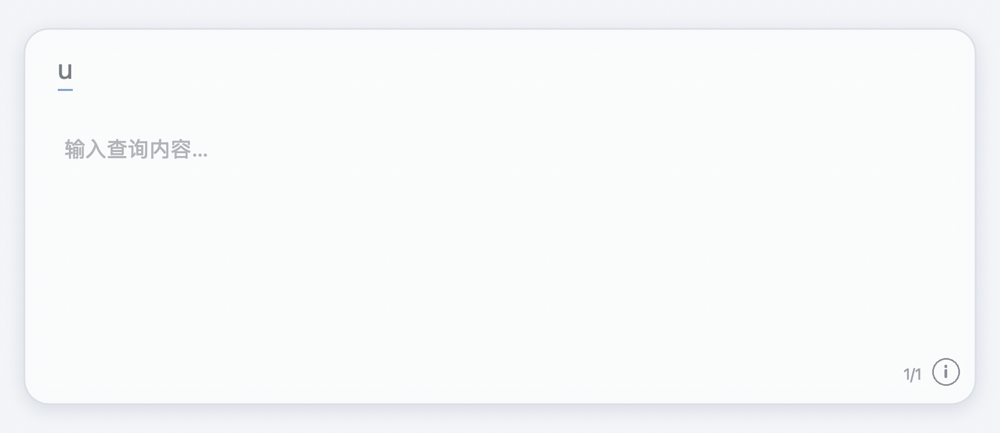
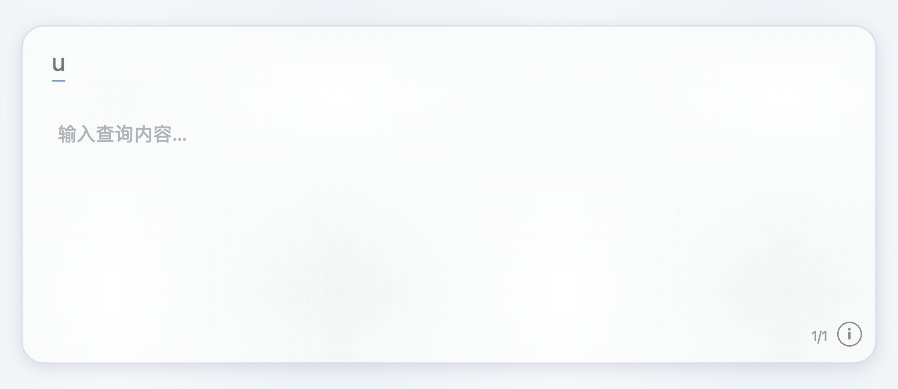
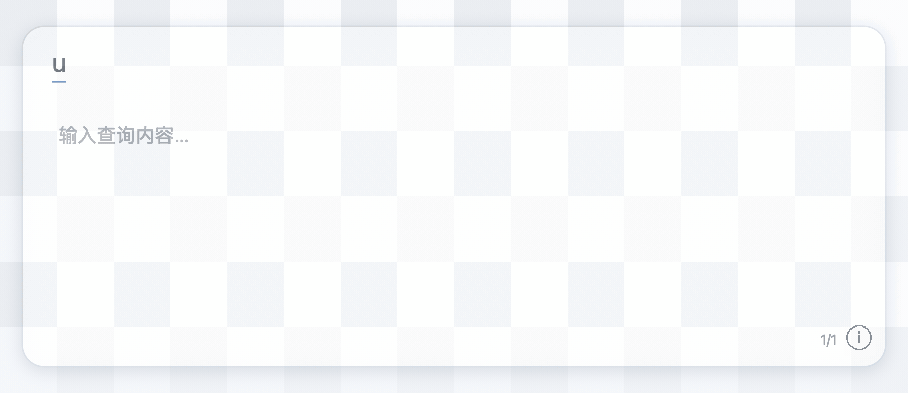

01 / TRANSLATE
候选旁边，直接看懂
中文候选看英文，英文候选看中文。词典优先，在线服务按设置顺序接力；有音标时一起显示。
原生候选 · 多来源翻译为 Squirrel × Rime 打造
常用查询，只差一个 u。
候选翻译贴着鼠须管原生候选面板显示；离开输入框后，输入 u 即可查询 IP、电话归属地、日期、单位和颜色。

不止是翻译
不用切换到另一个搜索框。一个前缀，接上翻译和一组随手可用的查询。
中文候选看英文，英文候选看中文。词典优先，在线服务按设置顺序接力；有音标时一起显示。
原生候选 · 多来源翻译查询目标 IPv4 的大致地区和网络服务商，也能查看本机与公网 IP。
uip8.8.8.8
手机号码与区号使用本地号段数据查询；号码不会为了归属地查询而上传。
号码数据留在本机
以上为操作示意动画，并非当前运行环境的实机录屏。
为什么是 SquirrelTranslate
它不是另一个通用输入法，也不是独立翻译窗口；它把即时信息放到鼠须管与 Rime 的工作流边上。
候选翻译就在鼠须管面板旁，不必先复制词语、再切到网页查询。
在非输入区域以 u 打开面板，继续输入拼音、IP、日期、单位或颜色。
颜色格式、时区时间、日期间隔、单位与货币换算都在同一查询面板里。
手机号归属地使用本地数据；在线翻译、IP 与汇率查询会按功能访问对应网络服务。
三步，继续手上的事
切到鼠须管简体输入源，在 Finder 等非可编辑区域输入小写 u。
例如 unihao、uip8.8.8.8、uconv1000pa、ucolor。
用方向键浏览候选与结果；按快捷键复制或继续操作。